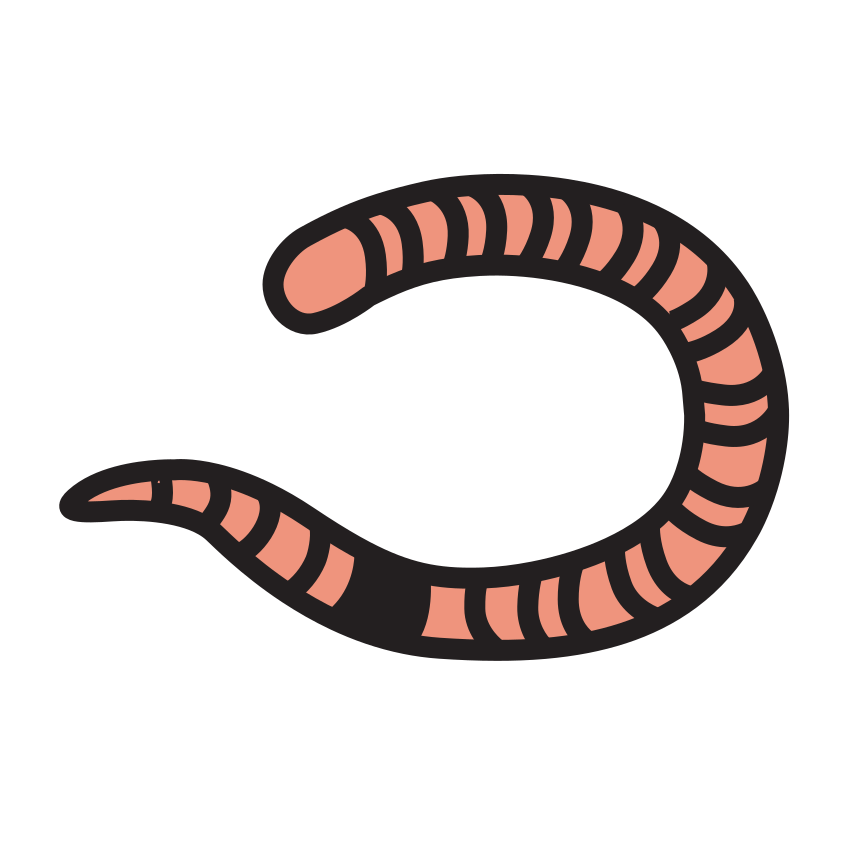
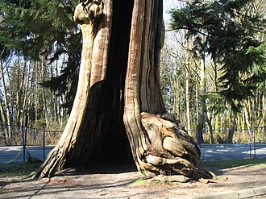
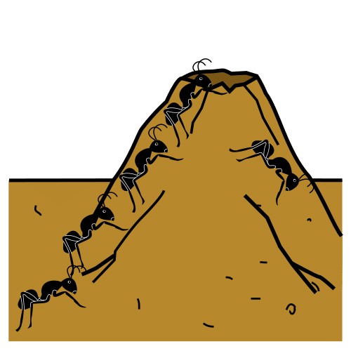

Prénom : Date :
Période 2 · Entraînement A1
Phonologie — rimes
Les paires qui riment ★ je m’entraîne
Sous-objectif : apparier des mots qui riment (prépare la fiche d’évaluation 2.3).
Consigne : 1. Relie les images qui riment (qui finissent par le même son). 2. Dis le mot modèle, puis colorie l’image de la ligne qui rime avec lui.
1

hibou

champignon

marron

renard

caillou

ver de terre
ballon
★ Défi : dessine dans la marge un mot qui rime avec SAPIN (lapin, pain…).
Compétence : repérer et apparier des rimes.Seul ☐ · Avec aide ☐ · À revoir ☐
Prénom : Date :
Période 2 · Entraînement A2
Lettres — reconstitution de mots
Je reconstruis le mot RENARD ★ je m’entraîne
Sous-objectif : composer un mot de 6 lettres en respectant l’ordre (prépare la fiche d’évaluation 2.4).
Consigne : 1. Découpe les grandes lettres, remets-les dans l’ordre du modèle et colle-les dans les cases. 2. Écris le mot toi-même. 3. Dans la bande, entoure le mot RENARD chaque fois qu’il est bien écrit.
1Le modèle : R E N A R D
✂ - - - - - - - - - - - - - - - - - - - - - - - - - - - - - - - - - - - - - - - - - - - - - - - - - - - - - - - - - - - - - - - - - - - -
3
RENARDRENARDRENRADRENARDREMARDRENARD
Compétence : composer un mot en respectant l’ordre des lettres.Seul ☐ · Avec aide ☐ · À revoir ☐
Prénom : Date :
Période 2 · Entraînement A3
Écriture cursive — boucles
Les lianes de la forêt ★ je m’entraîne
Sous-objectif : maîtriser la boucle (e, l) avant d’enchaîner les lettres (prépare la fiche d’évaluation 2.5).
Consigne : 1. Suis le modèle écrit au début de chaque ligne : petites boucles (e), grandes boucles (l), puis alterne. 2. Continue les lianes : ponts, vagues et ronds sans lever le crayon. 3. Entoure tes trois plus belles boucles de la page.
1
modèle : e e e e (petites boucles)
modèle : l l l l (grandes boucles)
modèle : e l e l e l
modèle : le le le
Compétences : boucles cursives ; enchaînements graphiques continus.Seul ☐ · Avec aide ☐ · À revoir ☐
Prénom : Date :
Période 2 · Entraînement A4
Mathématiques — quantités ≤ 8
Le garde-manger ★ je m’entraîne
Sous-objectif : dénombrer et écrire les nombres jusqu’à 8 (prépare la fiche d’évaluation 2.8).
Consigne : 1. Compte et écris le chiffre. 2. Repasse les chiffres 7 et 8 puis écris-les seul. 3. Colorie exactement autant d’images que le nombre. 4. Complète les bandes numériques.
Compétences : dénombrer jusqu’à 8 ; écrire 7 et 8 ; suite numérique.Seul ☐ · Avec aide ☐ · À revoir ☐
Prénom : Date :
Période 2 · Entraînement A5
Mathématiques — longueurs
Les bâtons de la collecte ★ je m’entraîne
Sous-objectif : comparer et ordonner des longueurs (prépare la fiche d’évaluation 2.11).
Consigne : 1. Écris 1 sous le bâton le plus court, 2, 3 et 4 jusqu’au plus long. 2. Dessine un bâton plus long que le bâton A et plus court que le bâton B. 3. Écris 1 sous le plus petit sapin, 2, 3, 4 et 5 jusqu’au plus grand.
Compétences : ordonner des longueurs et des tailles ; intercaler.Seul ☐ · Avec aide ☐ · À revoir ☐
Prénom : Date :
Période 2 · Entraînement A6
Le monde — animaux de la forêt
Chacun sa maison ★ je m’entraîne
Sous-objectif : connaître les habitats et les caractéristiques des animaux (prépare la fiche d’évaluation 2.13).
Consigne : 1. Relie chaque animal à sa maison. 2. Entoure en marron les animaux qui ont des poils, en gris ceux qui ont des plumes. 3. Coche ce que l’écureuil mange vraiment.
1
le renard
la chouette

l’écureuil

la fourmi

le creux de l’arbre

la fourmilière

le terrier

le nid dans l’arbre
3
☐

☐
☐
★ Défi : le hérisson n’a ni poils ni plumes sur le dos… comment s’appellent ses piquants ? Dis-le à un adulte, puis dessine un hérisson dans la marge.
Compétence : associer animal, habitat et caractéristiques (poils/plumes).Seul ☐ · Avec aide ☐ · À revoir ☐
Prénom : Date :
Période 2 · Entraînement B1
Phonologie — fusion de syllabes
Les mots coupés en deux ★★ je consolide
Sous-objectif : fusionner des syllabes pour retrouver un mot (prépare la fiche d’évaluation 2.3 et la période 3).
Consigne : 1. Un lutin a coupé les mots en deux ! Relie les deux morceaux qui vont ensemble pour reformer le mot, puis relie-le à son image. 2. Frappe chaque mot et écris son nombre de syllabes dans la case.
★ Défi : invente un mot rigolo en mélangeant deux morceaux (RE + PIN = REPIN !) et dis-le à un camarade.
Compétence : fusionner des syllabes orales.Seul ☐ · Avec aide ☐ · À revoir ☐
Prénom : Date :
Période 2 · Entraînement B2
Lettres — capitale et script
Le grand tri des noisettes ★★ je consolide
Sous-objectif : apparier un grand nombre de lettres dans les deux écritures (prépare la fiche d’évaluation 2.4).
Consigne : 1. Relie chaque lettre capitale à sa lettre script. 2. Écris toi-même la petite lettre qui manque. 3. Relie chaque mot en capitales au même mot en script.
★ Défi : retrouve le mot écrit en script et entoure-le : le modèle est GLAND → bland · gland · glend · gland
Compétence : correspondance capitale/script sur 12 lettres.Seul ☐ · Avec aide ☐ · À revoir ☐
Prénom : Date :
Période 2 · Entraînement B3
Écriture — cursive et encodage
Le petit mot du hérisson ★★ je consolide
Sous-objectif : enchaîner les lettres à boucles et encoder ses premières syllabes (prépare les fiches d’évaluation 2.5 et 2.7).
Consigne : 1. Continue chaque ligne en suivant le modèle. 2. Écris la syllabe que tu entends : LU, RI, LA (une lettre par case). 3. Écris les syllabes que la maîtresse dicte.
1
modèle : il · le · lit
modèle : elle lit le livre
★ Défi : écris la syllabe LI puis le mot LILI : →
Compétences : ligatures cursives ; encodage de syllabes simples.Seul ☐ · Avec aide ☐ · À revoir ☐
Prénom : Date :
Période 2 · Entraînement B4
Mathématiques — décompositions
Les deux paniers ★★ je consolide
Sous-objectif : décomposer 6, 7, 8 et connaître les doubles (prépare la fiche d’évaluation 2.8).
Consigne : 1. Dessine les noisettes qui manquent dans le 2e panier et écris les deux chiffres. 2. Complète les doubles. 3. Dominos : dessine les points qui manquent pour faire le nombre écrit au-dessus.
1
| Panier 1 | Panier 2 (je dessine) | En tout | Les chiffres |
|---|
| | 7 | et |
| | 8 | et |
| | 6 | et |
2
2 et 2 font · 3 et 3 font · 4 et 4 font
Compétences : décompositions de 6 à 8 ; doubles ; compléments.Seul ☐ · Avec aide ☐ · À revoir ☐
Prénom : Date :
Période 2 · Entraînement B5
Mathématiques — problèmes
Les provisions d’hiver ★★ je consolide
Sous-objectif : résoudre des problèmes d’ajout/retrait et comparer des quantités (prépare la fiche d’évaluation 2.9).
Consigne : 1. L’écureuil avait 7 noisettes, il en a mangé 3 : barre-les et écris le reste. 2. Le hérisson a trouvé 4 pommes le matin et 4 le soir : dessine et écris le total. 3. Entoure l’animal qui a le plus de provisions. 4. 6 champignons poussent, le cerf en mange 2 : barre-les et écris le reste. 5. 3 glands tombent, puis 4 autres : dessine-les tous et écris le total.
Compétences : ajout, retrait, comparaison de collections.Seul ☐ · Avec aide ☐ · À revoir ☐
Prénom : Date :
Période 2 · Entraînement B6
Espace — coder un déplacement
Les grands chemins de la forêt ★★ je consolide
Sous-objectif : coder et décoder des chemins plus longs (prépare la fiche d’évaluation 2.10).
Consigne : 1. Suis le code et trace le chemin : attention, il est long ! → → ↓ ← ↓ → → 2. Invente un chemin pour l’écureuil et code-le. 3. Regarde le quadrillage modèle : dessine chaque image au même endroit dans le quadrillage vide.
Compétences : coder/décoder un déplacement ; se repérer dans un quadrillage.Seul ☐ · Avec aide ☐ · À revoir ☐
Crédits des images
Les illustrations de ce cahier sont des pictogrammes Mulberry Symbols (Paxtoncrafts Charitable Trust, licence CC BY-SA 4.0, mulberrysymbols.org) et des pictogrammes ARASAAC (auteur : Sergio Palao, propriété du Gouvernement d’Aragon, Espagne, licence CC BY-NC-SA, arasaac.org), complétés des images suivantes. Merci à leurs auteurs et autrices.
- arbre-creux : Hollow Tree Stanley Park Vancouver.jpg — tree-species, licence CC BY 2.0.